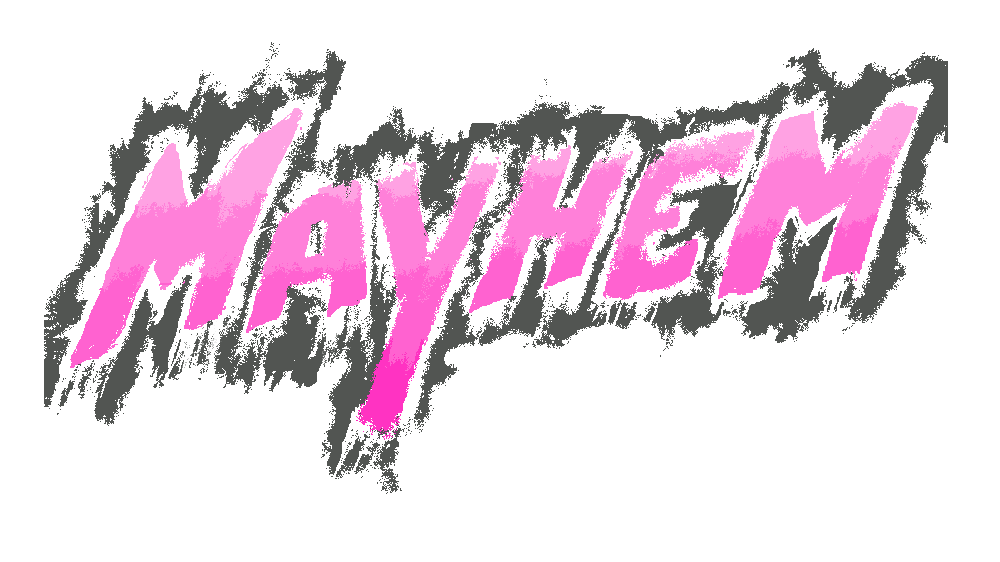
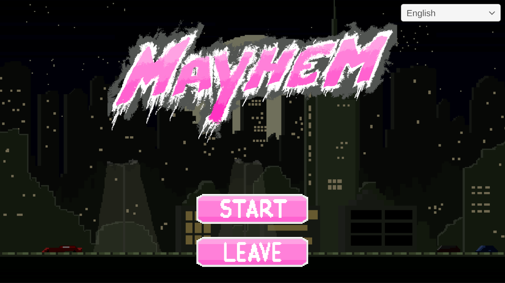
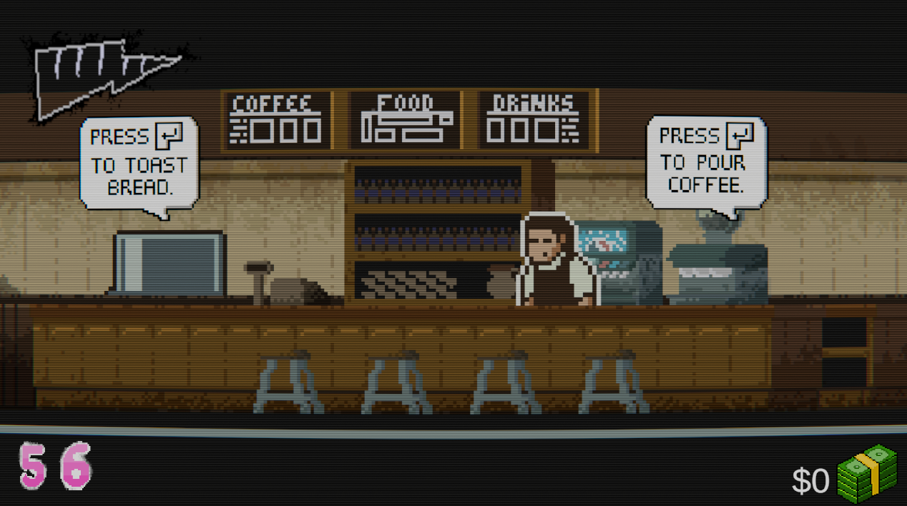
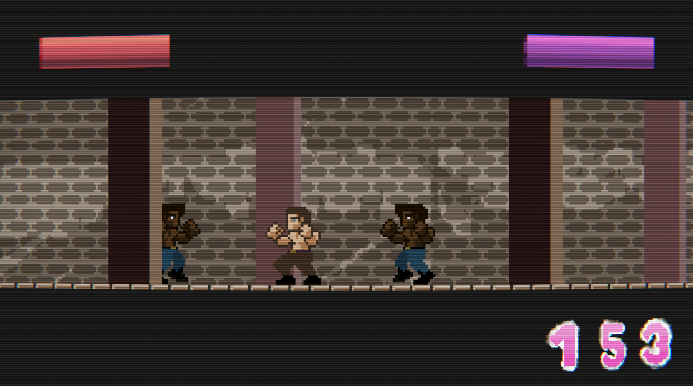
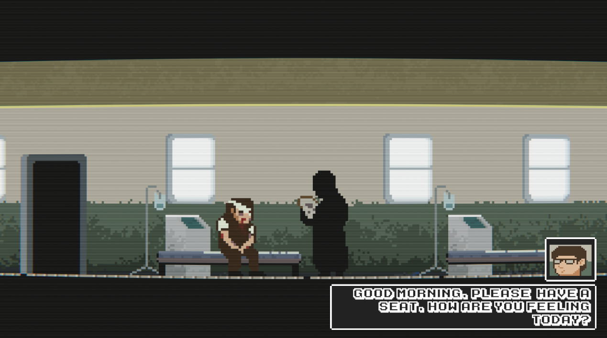

A 2D pseudo platformer-fighting game made for the DJD1 class at Universidade Lusófona's Videogames Ba!
Explore the docs »
“We are the All-Singing, All-dancing crap of this world”
Taking place in the same universe of the critically acclaimed film Fight Club (1999), you play in the perspective of William Richter, a nobody who struggles to afford a place in society.
Working in various jobs to make it to the end of the month, he hates his jobs because of the amount of stress from customers and his boss and repetitive work he must endure, and outside work he suffe[...]
In the late night walks he discovers the bar where the Fight Club occurs, and takes a liking to it so he can dispose of all his anger and stress to people who share similar problems in their everyday[...]




Here's the list of controls of the game:
Here's the list of the contributors of our game, we highly appreciate everyone reading this and we tried our best to make a good game, every feedback is greatly appreciated.
If you have a suggestion that would make this better, please contact us.
Don't forget to give the project a star! Thanks again!
. Simão Campaniço - simaocampanicodev
. João Ferreira - KR1PT1CS
. Dinis Barroso - DinisB
. Rafael Martins - RafaelSMartins
. Ivan Batista - @whos_batixta
Github Link: https://github.com/simaocampanicodev/mayhem
Itch.io Link: https://txgerdev.itch.io/mayhem